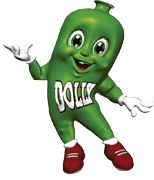

|

|
A história da Dolly, cujo nome faz referência aos animais de estimação da família,
remonta a 1987. À época, o proprietário pôs no mercado o primeiro refrigerante dietético brasileiro.
Os negócios engrenaram mesmo em 1994, quando surgiu a fábrica em Diadema.
ler mais
|